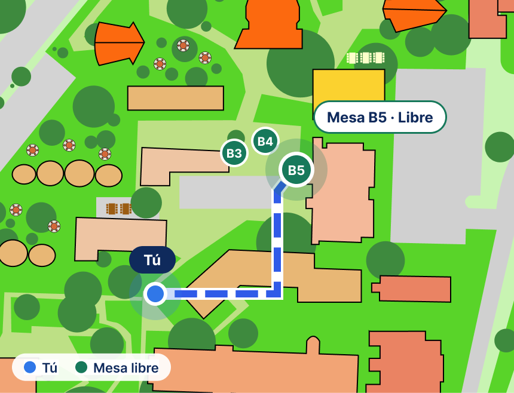

Destino: Mesa B5 · Biblioteca
- Sal desde tu ubicación, marcada como «Tú».
- Sigue la línea azul del mapa.
- Llegarás a la zona Biblioteca.
- Busca la mesa B5.
La ruta es aproximada. Confirma el camino en el campus.

La ruta es aproximada. Confirma el camino en el campus.